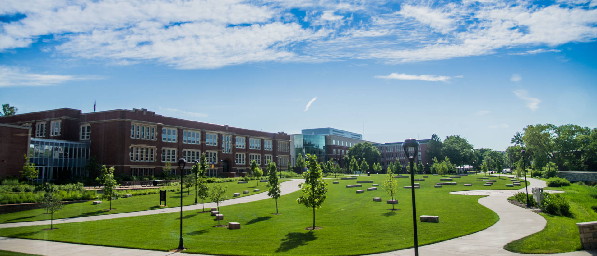

The University of Wisconsin: Eau Claire
Founded in 1916 the University of Wisconsin Eau Claire began as a school to eduacate school teachers and principals. UWEC is located on the banks of the Chippewa River close to Water Street. Named Wisconsin's most beautiful campus Eau Claire offers over 150 academic programs and has over 230 student organizations to chose from.
About
Ranked amgon the top five regional public institutions in the midwest every year since 1995
More Than 28 buildings spanning across 333 acres
Average starting salary of $45,773 post graduation
Ranked #1 in undergrad collaborative resarch, more than 165 acres dedicated to environmental research
38% of students participate in study abroad, more than any masters level institution in Wisconsin and raned 10th nationally among all masters schools with study abrod programs
History
Eau Claire State Normal School(1916-1927)
UWEC first opened as the Eau Claire State Normal School in 1916, it was just a single building now known as Scholfield hall. The school provided eduaction for teachers and principals
Eau Claire State Teachers College(1927-1951)
After gaining authorization to offer four years of higher eduaction and the ability to grant its students a bachelors degree in education, the name of the school was changed to Eau Claire State Teachers College. A few years after the first big expansion projects were starting.
Wisconsin State College at Eau Claire(1951-1964)
In 1951 the Board of Regents gave the college the ability to grant a bachelor of arts degrees and bachelor or science degrees in liberal arts. The name was then changed to Wisconsin State College at Eau Claire.
Wisconsin State University-Eau Claire(1964-1971)
In 1964 the college gained university standing. The institution was then renamed to Wisconsin State University-Eau Claire. During this time a 50 million dollar building program was realized. 7 new residence halls, 2 food and recreacion centers, the Phillps hall, the school of nursing, and the McPhee center were all built in this time. Among this were expansions to the Davies center and the McIntyre Library.
The University of Wisconsin-Eau Claire(1971-Present)
Aftter merging into the Wisconsin State University System and the University of Wisconsin System the institution was renamed to The University of Wisconsin-Eau Claire as we know it today.
UWEC Campus

Photo Of Blu The Mascot